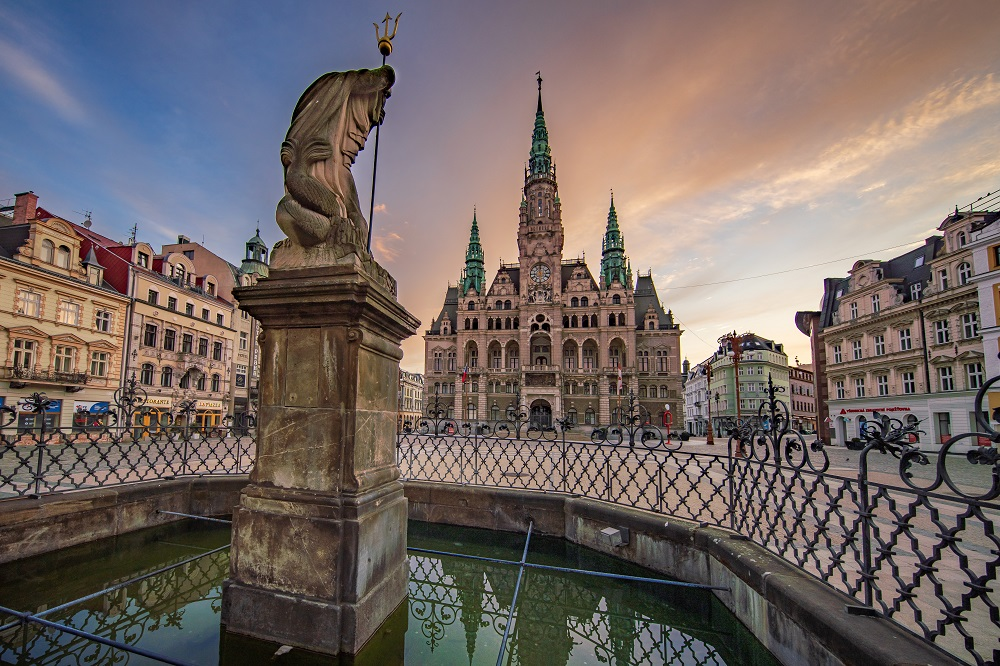
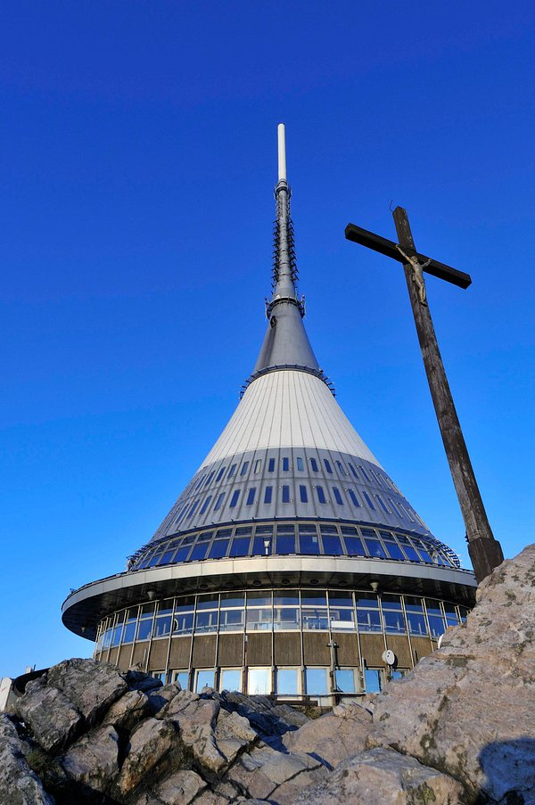

Liberec es una ciudad situada al norte de la República Checa, capital de la región de su nombre. Es la quinta ciudad en población en la República Checa, contando con 104 508 habitantes. A tan solo unos pocos kilómetros de Alemania y Polonia es un enclave en las comunicaciones por tren y carretera en esta zona.
Plaza del ayuntamiento en la ciudad de Liberec
Uno de los principales atractivos turisticos de la región de Liberec es la Torre Ještěd es un transmisor de televisión y hotel situado en la cima del monte Ještěd, cerca de Liberec, en la República Checa. Es una estructura icónica, reconocida por su forma de hiperboloide y su diseño en hormigón armado.
La torre Ještěd siutada en la montaña con su mismo nombre
La torre, que alcanza una altura de 94 metros, fue diseñada por el arquitecto Karel Hubáček y alberga un hotel en su interior.